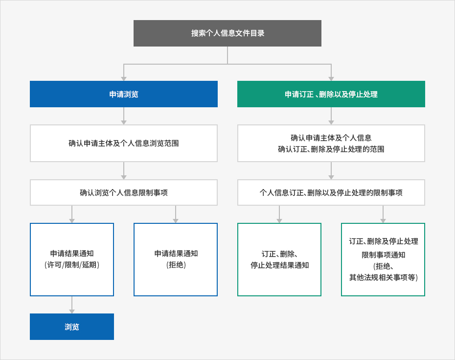

个人信息处理方针
- Home
- 网站指南
- 个人信息处理方针
“Invest KOREA”负责收集的所有个人信息都是根据相关法令来进行收集、保存和处理的。
《个人信息保护法》制定、提出管理个人信息的一般性准则，“Invest KOREA”根据该项法律的规定，收集、保存及处理的个人信息，可合法性、适当性进行管理和处理，以合理地执行公共业务和保护使用者的权利。
此外，“Invest KOREA”根据相关法律的规定，对收集到的个人信息，尊重使用者的阅览、修订/删除、中止处理要求等权利。如果这些法律上规定的权利被侵害时，使用者可根据《行政审判法》，请求行政审判。
“Invest KOREA”根据《个人信息保护法》第30条，为保护信息主体的个人信息和权利，并完善地处理与个人信息有关的使用者的困难，可树立、公开以下各项个人信息的处理方针。
第1条(个人信息的处理目的)
- ① “Invest KOREA”因向客户提供服务与处理信访等目的，在最小的必要范围内收集各人信息。
- ② “Invest KOREA”根据《个人信息保护法》第32条，注册、公开的个人信息文件的处理目的有以下几种：
| 编号 | 个人信息文档的名称 | 运营根据 | 处理目的 |
|---|---|---|---|
| 1 | 《Kotra Express》订阅会员 | 信息主体同意 | 订阅外商投资信息杂志 |
| 2 | 在线咨询服务使用者 | 信息主体同意 | 回答在线咨询的问题 |
第2条(个人信息的处理与保存期限)
- ① “Invest KOREA”拥有法令所规定的个人信息、使用时间或在获得信息主体同意的前提下，收集个人信息时，在个人信息拥有、使用时间内处理、保存个人信息。
- ② 个人信息的处理与保存时间如下：
| 编号 | 个人信息文档的名称 | 运营根据 | 保存期限 |
|---|---|---|---|
| 1 | 《Kotra Express》订阅会员 | 信息主体同意 | 直至取消订阅 |
| 2 | 在线咨询服务使用者 | 信息主体同意 | 5年 |
有关“Invest KOREA”的个人信息注册事宜，可应用公开的行政安全部个人信息保护综合扶持网站(www.privacy.go.kr) → 个人信息信访 → 个人信息阅览请求 → 个人信息文档目录搜索栏。
第3条(向第三者提供个人信息)
原则上，“Invest KOREA”在明示的范围内进行处理，以达到收集、使用信息主体个人信息的目的。除以下情况以外，在事前没有得到使用者同意的情况下，不能超过本来的目的范围，进行处理或者向第三者提供。
- 1. 获得信息主体特别同意的情况。
- 2. 在法律上有特别规定的情况。
- 3. 在信息主体或法定代理人无法表明意思的状态下或住所不明确时，即使没有事前同意，如果被认定是保护信息主体或第三者生命、身体和财产利益等有必要的情况。
- 4. 认为对于制作统计和学术研究等有必要的情况，并在无法知晓特定个人的形态下所提供的个人信息。
- 5. 如果个人信息不使用于其它目的或不向第三者提供时，会出现无法实施其他法律所规定的业务的情况，但这必须通过保护委员会的审议、决议。
- 6. 为履行条约，以及其它国际协定，被认为在向外国机构提供信息时有必要的情况。
- 7. 认为对协助犯罪搜查和提交、维持控诉等有必要的情况。
- 8. 认为对法院执行裁判等业务有必要的情况。
- 9. 认为对执行刑法、监护和保护处分等有必要的情况。
第4条 (委托处理个人信息)
-
① “ Invest KOREA”为顺利处理个人信息业务，委托以下企业，处理个人信息。
委托处理个人信息 编号 委托业务 委托企业名称 电话 工作时间 委托单位管理
现况检查结果1 “Invest KOREA”网站的运营及维持、维护 SGA(株) 02-6404-8811 09:00~18:00 适当 2 客户指南中心的运营 (株)TRANSCOSMOS KOREA INC. 02-790-8106 09:00~18:00 适当
第5条(关系信息主体的管理、义务及其活动方法的相关事项)
-
① 信息主体(未满14岁的情况，可由法律代理人来行使权力)任何时候都能行使以下各项保护个人信息的权力。
- 1. 要求阅览个人信息。
- 2. 如有错误时要求修正。
- 3. 要求删除。
- 4. 要求中止处理。
- ② 行使第一项权力，根据《个人信息保护法施行令》附表第8号的格式，制作书面申请书，并通过电子邮件、传真(FAX)来进行，相关机关对此必须及时采取措施。
- ③ 信息主体对个人信息的错误等，可要求修正或删除，这种情况下，直到完成修正和删除时，可不使用、提供该个人信息。
- ④ 行使第1项所规定的权力，可通过信息主体法定代理人或委托人等代理人来实施。这种情况下，必须提交《个人信息保护法施行规则》附表第11号格式的委托书。
- ⑤ 要求阅览与中止处理个人信息时，根据《个人信息保护法》第35条第5项、第37条第2项，可限制信息主体的权利。
- ⑥ 要求修订或删除个人信息时，如按照其他法律，该个人信息被明确表示为是被收集的对象的情况时，不可删除相关个人信息。
-
⑦ 按照信息主体的权利，可要求阅览、修正/删除，或要求中止处理时请求阅览等，但这些情况必须确认人是否是本人或适当的代理人。
* 要求出示可证明是本人的身份证(身份证、驾驶证、护照等)。
* 是代理人的情况，必须出示可确认是代理人的身份证和委托书。
* [《个人信息保护法施行令》附表第8号]的个人信息(阅览、修正/删除、中止处理)的要求书
* [《个人信息保护法施行令》附表第11号]委托书 -
⑧ 请求阅览、修正/删除、中止处理个人信息时，必须走以下的程序：
개인정보파일목록 검색
- 열람청구
- 청구 주체 확인 및 개인정보 열람 범위 확인
- 개인정보 열람 제한사항 확인
- 열람결정 통지 (허용/제한/연기) - 열람
- 열람결정 통지(거부)
- 정정·삭제, 처리정지 청구
- 청구 주체 확인 및 개인정보 정정·삭제, 처리정지 범위 확인
- 개인정보 정정·삭제, 처리정지 제한사항 확인
- 정정·삭제, 처리정지 결과 통지
- 정정·삭제, 처리정지 제한사항 통지(거절, 타 법령 관련 사항 등)


第6条 (处理的个人信息项目)
“Invest KOREA”处理以下个人信息项目。
| 编号 | 个人信息文档名称 | 记载在个人信息文档上的个人信息事项 | |
|---|---|---|---|
| 1 | 《Kotra Express》订阅会员 | 必填 | 姓名、电子邮件、国籍、职业 |
| 2 | 在线咨询服务使用者 | 必填 | 姓名、电子邮件、电话号码 |
第7条 (个人信息销毁程序与方法)
原则上“Invest KOREA”达到个人信息处理目的时，可及时销毁相关个人信息。 但，根据其它法律，必须保存时，也无需这么做。销毁的程序、期限和方法如下：
-
甲. 销毁程序
不必要的个人信息和个人信息文档在个人信息负责人的管辖下，根据内部方针程序，进行以下各项处理。- 销毁个人信息超过保存期间的个人信息从终了日起可及时进行销毁。
- 销毁个人信息文档达到个人信息文档的处理目的后，废除相关服务，事业终止等当个人信息文档不再需要时，从被认为不再有必要处理个人信息的那天起，及时销毁该个人信息文档。
-
乙. 销毁方式
- 电子文档型的信息将采取信息记录无法再生的技术方法。
- 写在纸张上的个人信息将通过粉碎机或烧却等方法来销毁。
第8条 (稳定确保个人信息的措施)
“Invest KOREA” 根据《个人信息保护法》第29条，采取以下能确保安全的技术性、管理性、目的性措施。
-
1. 个人信息处理职员最少化并实施教育
指定个人信息处理职员并人数最少化，同时实施管理个人信息的对策。 -
2. 限制接触个人信息
对于处理个人信息的数据系统，通过赋予、变更和取消接近的权利，对统制、管理个人信息的接触途径，采取必要的措施。同时，使用侵入切断系统，统制从外部来的非法接触。 -
3. 保管使用记录
最少保管、管理六个月以上的个人信息处理系统的使用记录(网络登录、简要信息等)。 -
4. 个人信息密码化
客户的个人信息凭借设置密码，被安全的保存和管理。另外，在保存和传送重要数据时，采取输入密码等特别的保安措施。 -
5. 设置保安项目与周期性检查、更新
“Invest KOREA”为防止因黑客或计算机病毒等所造成的个人信息外泄与损坏、丢失，设置安全软件，并作周期性的更新和检查。 -
6. 统制管理非法者的侵入
另外设置个人信息系统的物理性管理空间，以保管革新信息，同时为此，树立、运营进出统制程序。
第9条 (保护个人信息的各方面负责人及其联系方式)
“Invest KOREA”为保护个人信息和处理有关个人信息的不满信访，指定以下个人信息保护负责人和实务工作人员。(《个人信息保护法》地31条第1项规定的个人信息保护负责人)
| 个人信息保护负责人 | 各领域个人信息保护负责人 | 个人信息保护管理人 |
|---|---|---|
|
部门名称：贸易基础本部 柳在垣本部长 电话：02-3460-7400 |
部门名称：投资企划室 李永善室长 电话：02-3460-7824 |
部门名称：投资宣传组 金素仙 电话：02-3460-7840 传真：02-3460-7920 邮件：lunakss@kotra.or.kr |
第10条 (申请阅览个人信息)
-
① 信息主体可在以下部门申请阅览《个人信息保护法》第35条所规定的个人信息。KOTRA努力处理信息主体的个人信息阅览申请。
※ 接受、处理个人信息阅览申请的部门
- 部门名称：投资宣传组
- 业务担当：金素仙
- 联系方式：电话 02-3460-7840 / 电邮 : lunakss@kotra.or.kr / 传真 02-3460-7920
- ② 信息主体除第1项的阅览申请接受/处理部门以外，还可通过行政自治部门的“个人信息保护综合扶持网站”(www.privacy.go.kr)申请个人信息阅览。
※ 行政自治部个人信息保护综合扶持网站 → 个人信息信访 → 申请阅览等(有必要通过公共的IPIN等，进行实名认证)
第11条 (权力侵害的对应方法)
个人信息主体可向以下机关咨询被侵害的个人信息等的对应、损失弥补、商谈等。
<以下机关作为不同于KOTRA的机关，如果不满意KOTRA对自己个人信息处理或对损失对应措施、结果，需要具体帮助时，请进行咨询。>
-
个人信息侵害申报中心(韩国网站振兴院运营)
- 所管业务：申报个人信心侵害事实，申请洽谈
- 网站 : http://privacy.kisa.or.kr
- 电话：(无需区号)118
- 地址：(58324)全罗南道 罗州市 振兴路 9(Bitgaram洞301-2)3楼 韩国网站振兴院 个人信息侵害申报中心
-
个人信息纠纷协调委员会
- 所管业务：申请个人信息纠纷调停、集团纠纷调停(解决民事)
- 网站 : http://www.kopico.go.kr
- 电话 : 1833-6972
- 地址：(03171)首尔市 锺路区 世宗大路 209 政府首尔市厅大楼 个人信息纠纷协调委员会
- 高级检察厅网络犯罪调查科 : (无区号)1301 (http://www.spo.go.kr, cid@spo.go.kr)
- 警察厅网络犯罪安全局 : (无区号)182 (http://cyberbureau.police.go.kr)
此外，关于信息主体对阅览、修正/删除、中止处理个人信息等的请求，因公共机关总负责人指示处分或不采取措施，在权利和利益方面受到损失时，可根据《行政审判法》，要求实施行政审判。
※ 请咨询中央行政审判委员会(http://www.simpan.go.kr)的电话。
第12条 (自动收集个人信息装置的设置、运营及拒绝的相关事项)
“Invest KOREA”储藏使用者的相关信息并随时可使用曾找到的“Cookie”(接触网络的信息数据等个人信息自动收集装置)。所谓“Cookie”是指运营机关网站时，被使用的服务器把使用者向浏览器发送的少量信息储村在使用者计算机硬件上的功能。据此，当使用者再次接触该网站时，计算机能阅读使用者曾留在浏览器上的“Cookie”内容，使用者的追加信息可在自己的计算机上找到，因此在接触时，无须输入姓名等追加信息，就能使用相关服务。“Cookie”能识别使用者的计算机，但无法识别使用者个体。此外，使用者有选择是否设置“Cookie”的权力。据此，使用者在浏览器上可设定选择权，那么所有"Cookie"就会被允许，或每次储存“Cookie”时通过确认，或拒绝储存“Cookie”。但，拒绝设置“Cookie”时，网站使用会有不便，登录时所需要的部分服务在使用时，会存在一定的困难。
<设定方法的例子>
-
1. “Internet Explorer”网页浏览器的情况：
网页浏览器上端的“工具”菜单 ▷ internet选项 ▷ 个人信息 ▷ 阻止Cookie的设定 -
2. “Chrome”网页浏览器的情况：
网页浏览器右侧的“设置”菜单 ▷ 画面下端的“高级设定” ▷ 个人信息资料的设定 ▷ 阻止Cookie的设定
第13条 (个人信息处理方针的变更)
① 本方针从2019年6月20日开始实施。
② 之前的个人信息处理方针可通过以下途径进行确认。
② 之前的个人信息处理方针可通过以下途径进行确认。